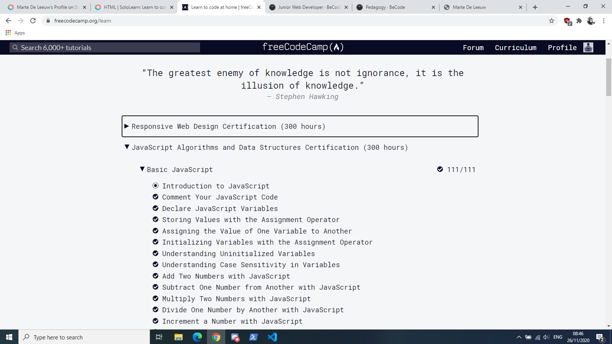

About me
My self
Hello there! I am Marte and I will be 28 years old on the 5th of December. I spent most of my life in Lier and Antwerp but moved to Leuven 1,5 years ago. In my spare time I love to climb (both indoors and outdoors), play boardgames like 7 Wonders and Dominion, and read fantasy books. My favourite book series are:
- The Kingkiller Chronicle – Patrick Rothfuss
- The Cosmere – Brandon Sanderson
- The Realm of the Elderlings – Robin Hobb
In the past year I have developed a love for coffee and running. Especially the second one is something I would have never thought possible since I was a “running is boring” kind of person. So a big thanks to the lockdown for changing my perspective on this.
My education
During my teenage years I went to high school in Lier where I followed the science-mathematics track.
Upon graduating I moved to Antwerp to study the mandolin at the Royal Conservatory.
Right after I got my
master’s degree in music in 2015, I studied for one more year so I could get my
teacher’s degree. For those wondering what kind of instrument the mandolin is, here is a video of
me performing with my former ensemble Toccanti in 2019.
I learned a lot during my years at the Conservatory so I don’t regret going there. However, during my years as a student, freelance musician and teacher I realized that wasn’t the right career path for me. That is when I decided to go live in England and work as an au pair for a year to improve my English, get to know another culture and figure out my next step. That year completely changed me for the better and is one of the best parts of my life so far.
My work experience
After my year abroad came the challenge of finding a job with my very specific master’s degree and not a lot of working experience outside that field. Thankfully it didn’t take too long before I could start working in customer services. This was a great way to get some experience in dealing with clients and also gave me a chance to get to know the workings of a big company. Here is a little overview of the jobs I’ve had these past three years.
| Company | Position | year |
| Eneco | Customer Service Champion | 2017 - 2018 |
| Krunsj vzw | Educational employee | 2018 – 2019 |
| Bootz / Anders Reizen | Bootz manager | 2019 – 2020 |
At each of these companies I acquired skills that have already helped me so much, both in my personal and professional life. Some of them are:
- (Client-) communication
- Teamwork
- Planning
- Organizational skills
About coding
My reasons
During my career in the socio-cultural sector and later tourism, I always felt like something was missing. That is why I started looking into different career paths. First I just talked about it with friends who mentioned coding, among other things. Once I became more serious about changing jobs I went to a job coach.
This decision turned out to be my salvation. After a few conversations it became clear that a job in IT and more specifically coding, could be perfect for me. In my previous jobs the days I liked most were when I could delve deep in the programs (like Axapta, CMS,...) we were working with or when I could optimize an extensive Excel sheet or other more technical tasks. What cleared things up most for me was the result of my ‘career anchors’ test. My most important ones are:
- Technical/functional competence
- Pure challenge
Simply put, the first anchor means that I need a job in which I can learn technical skills in a certain area and continue to develop those skills to an increasingly higher level. I love exceeding in something, being a specialist people come to for help and always going further on a technical level. The 'challenge' anchor is very straight-forward: it gives me a lot of satisfaction when I can solve a seemingly unsolvable problem or overcome difficult obstacles. The possibility to keep on learning, variety and overcoming challenges or difficulties are what makes (and keeps) a job interesting to me.
My journey so far
 During the past couple of months I started going over the tutorials and challenges on freeCodeCamp to make absolutely sure whether programming was the job for me. At the same time I worked as a waitress to provide for myself so I only had some time before or after a shift but still I loved it. After working a 10 hour-shift in 35℃ it completely relaxed me to do some exercises in JavaScript. I also started talking a lot with one of my programmer friends and realized that to really go for it I would have to register for a full-time training.
That is when I went looking for the best programming course for me. At first I focused on trainings organized by VDAB and Intec. However, after some research I didn’t feel like any of them were the right fit for me so I kept on looking and eventually found BeCode two weeks ago. Ever since then I have been doing excercises on Sololearn non-stop as well as writing my own website (thank you Koen, for the great workshop and planting the idea in my head). After joining the BeCode Discord and following some of their workshops, I am now 1000% (the extra 0 is not a typo) sure that this is the course for me. The main reasons for this are:
- Active pedagogy is the best way to learn for me
- The broad content of the course in the beginning
- The possibility of specializing later on in the training
- The intensity of the course
- The internship at the end of the training
My future
One of my friends (a .NET developer) and I have talked about writing a coffee-app to keep track of the different kinds of coffees and coffee making methods people use so I am very excited to start working on that. But my first goal is to get into the BeCode training and become the best programmer I can possibly be.
With all the information I have now I feel the jobs that I would like the most are back-end developer or full-stack developer but who knows… Maybe I end up liking the front-end even more. That is what I love about coding. There is such a big world behind our screens and so many languages, specialties and ways to go. I cannot wait to explore them full-time!